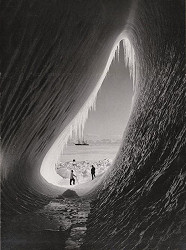

Antarctica
Antarctica is the southermost continent of Earth, located at the southern pole. Because of its current position it is mostly covered by thick glaciers which grow by continuous snow falls. All plains are covered by several kilometers of ice, only a few mountain ridges are higher than the ice and form solid ground. The continent, like all continents 200 million years ago a part of the super continent Pangaea, was transported to this place by plate tectonics. It does not stand still, but continually moves toward Australia, and so it leaves its icey place continually and might reach a temperate zone in 40 or 50 million years.
This exceptional continent is of great geologic importance. Obviously the current location is outstanding and allows important scientific research. For instance the ice cover, layer above layer, is a record of the climate of the last millions of years. The ice is ideal to find rock meteorites, as they are lying on top of the ice. There are no other rocks on the ice and so it is easy to find them.
Antarctica it was formed in other climates, it has the same rocks as its former neighbours. This inludes important ore and oil deposits, gemstones and fossils. To protect the continent, it was declared an international protection zone, which means it does not belong to any country and nobody is allowed to start mining operations. At the moment this operations would probably be too difficult to be remunerating, but this might change in the future. Mining operations would definitely destroy the fragile eco system and also contaminate the the ice diminishing its scientific value.
|  |
| Image: Grotto in an iceberg, by Herbert Ponting. Scientists T. Griffith Taylor and Charles S. Wright at the entrance, and the Terra Nova in the distance. British Antarctic Expedition of 1911-1913, 05-JAN-1911. |
{kind=link}
As Antarctica has the same geology as all other continents, it also must have karst. There are limestones, and it is very probable they are karstified with caves inside. There are more than 100 lakes known under the ice and huge streams connecting them. If the water flows between ice and rocks, it will also create caves in soluble rock. There are also volcanoes, like Mt Erebus, which should have produced primary caves like lava tubes. The general problem is to get there and to find them. At the moment we only know of research in the glacier caves of the ice shield. All other cvaes are just educated guesses and speculations. But once found they would be of extraordinary scientific value.
The most easily accessible caves on Antarctica are the Glacier caves. Formed by ice movements, they change rapidly and are rather dangerous. Other caves are formed by thermal activities caused by volcanism. They are also dangerous, because of hot water, steam, and poisonous gases. On the other hand they are important access ways into the glacier to older layers of ice.
The first caver reaching Antarctica was
 Emil Racovita,
who arrived in the Peninsula in January 1898 with the Belgica expedition.
Also the Scott expedition of 1911 took a photo of an
ice cave entrance.
But the first authentic cave exploration took place during the
Haroun Tazieff
expedition to Mount Erebus in 1977.
Some fumarole caves were explored in the volcano close to the US Mac Murdo base.
In 1980s glaciologists from East Germany explored some classical ice caves,
created by water flow.
They are outflow conduits draining internal glacier waters.
This was in Schirmacher Oasis, a dry valley near the Russian base
Novolazarevskaya in Queen Maud Land.
In 1985 Italian glaciologists explored fumarole caves on Mt Melbourne.
However, all those explorations were not speleologic exploration, and so the
explorations were not appropriately documented.
There are not even tour reports.
Emil Racovita,
who arrived in the Peninsula in January 1898 with the Belgica expedition.
Also the Scott expedition of 1911 took a photo of an
ice cave entrance.
But the first authentic cave exploration took place during the
Haroun Tazieff
expedition to Mount Erebus in 1977.
Some fumarole caves were explored in the volcano close to the US Mac Murdo base.
In 1980s glaciologists from East Germany explored some classical ice caves,
created by water flow.
They are outflow conduits draining internal glacier waters.
This was in Schirmacher Oasis, a dry valley near the Russian base
Novolazarevskaya in Queen Maud Land.
In 1985 Italian glaciologists explored fumarole caves on Mt Melbourne.
However, all those explorations were not speleologic exploration, and so the
explorations were not appropriately documented.
There are not even tour reports.
The first expedition especially devoted to caving in Antarctica was in March 2000 on the 43rd Russian Antarctica Expedition. A team of the Italian association La Venta and a Spanish group from Etsim were invited to explore some glacier caves in the Collins Glacier, King George Island, South Shetlands. The few explorations ever carried out on ice caves (moulins) at Antarctica resulted in important scientific data.
Sights of Antarctica
Antarctica is recently becoming a tourist destination. People are travelling south from Australia or Fireland on special ships. Those trips are still expensive and they are dedicated to the landscape and the fauna of the continent. Caving or spelunking trips are still not existent, although the participants might visit the entrance of a glacier cave. So we have nothing to list at the moment.
- Additional Information about Antarctica
 Search Google for "Antarctica geology karst"
Search Google for "Antarctica geology karst" Polar glacial speleology
Polar glacial speleology- Antarctic Expedition to Erebus Volcano Examines a Lake of Lava
- News in Science - Antarctica has vast underground rivers - 20/04/2006
- United States Antarctic Resource Center
- Antarctica: Geology and Geography
- The Ice Cave | Ice Stories: Dispatches From Polar Scientists
- The Ice Caves of Mt. Erebus, Antarctica | The Science Friday Blog
(visited: 22-DEC-2010)